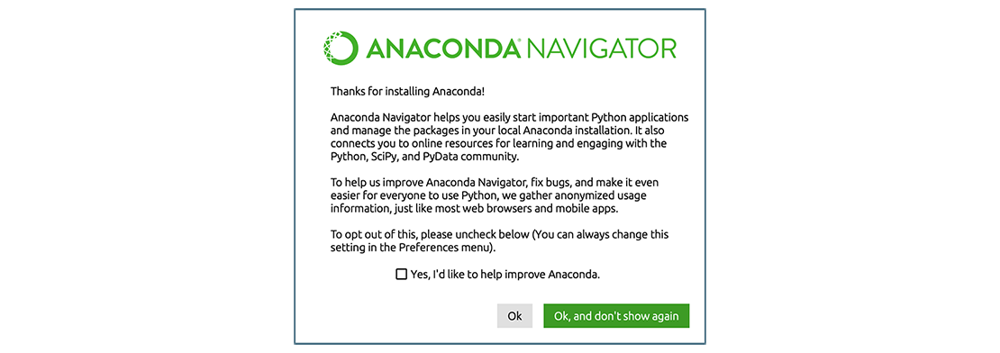

Summary and Setup
This lesson is an introduction to programming in Python requiring little or no previous programming experience. It uses examples that are relevant to a range of basic data exploration use cases, and is designed as a prerequisite for other Python lessons that could be offered in the future. The lesson uses the Google Colab computing environment and Python 3.
Prerequisites
Learners need to understand what files and directories are and what a working directory is.
Learners must have a Google account capable of accessing Google Colab. Learners must also download the dataset that will be used in the lesson before the workshop begins.
Please see setup instructions below for details.
This lesson is designed to be run on a personal computer. All of the software and data used in this lesson are freely available online, and instructions on how to obtain them are provided below.
Setup
To participate in this lesson, we will use Colab notebooks. Colab is a cloud-based environment where you can run scripting languages such as Python, create small segments of code, annotate them with notes and rich text, and return to your work later.
We will need to import our own resources into Colab, such as our simulated data. In order to do this, we will use Google drive. Because we will need to grant Colab access to our Google Drive data, we strongly recommend creating an ad-hoc (“throwaway”) Gmail account. That way, we do not risk sharing or altering any sensitive data that we might have on our Broad Institute Google accounts.
Obtain lesson materials
- Download this zip file and save it to your Desktop.
- Unzip the
data.zipfile, which should create a new folder calleddata. - Create a new folder in your home directory called
lc-pythonand put thedatafolder in this folder. - Log into Google Drive using the Gmail account you created for this course. You may want to use a private browsing window to do this if you usually use your Broad account when logging in to Drive.
- Upload the lesson content by clicking “+ New” followed by “Folder
upload.” Select and upload the
lc-pythonfolder you just created.
You should see a lc-python folder in “My Drive”, with a
subfolder called data.
Run the access test
Click “Copy to Drive” and create your own copy of
Python_workshop_data_access_test.ipynb
If you see this dialog box, click “Connect to Google Drive”

Authorize access for the google account you’re using for this workshop. There will be several prompts to grant access.
Once access has been granted, go back to the access test notebook, click the ▶️ symbol on the left hand side of the first code cell.
You’ve successfully loaded data if you see a dataframe appear beneath the code cell.
If you need help with setup, we’ll have office hours on Fri. Sept. 20 from 12:00 - 1:00pm in Tahiti Conference Room, 105B Room #301 and on Fri. Sept. 27 from 1:00 - 2:00pm in Madagascar Conference Room, 105B, Room #504.
We chose Google colab to ensure Python setup and everyone’s Jupyter interface would be consistent. For your personal use, you may prefer not to use colab. Below are colab alternatives that you might consider post-workshop.
Python interfaces
To start working with Python, we need to launch a program that will interpret and execute our Python commands. For our purposes today, we will use Colab, so you do not need to read further right now. However, if you want to do more with Python, you have a variety of options. It is a good idea to try out several of these interfaces to get a sense of which you prefer.
Jupyter Notebook
A Jupyter Notebook provides a browser-based interface for working with Python. Colab is one example of this. If you install Anaconda, you can launch a notebook in two ways:
- Launch Anaconda Navigator. It might ask you if you’d like to send anonymized usage information to Anaconda developers:  Make your choice and click “Ok, and don’t show again” button.
- Find the “Notebook” tab and click on the “Launch” button:
 Anaconda will open a new
browser window or tab with a Notebook Dashboard showing you the contents
of your Home (or User) folder.
Anaconda will open a new
browser window or tab with a Notebook Dashboard showing you the contents
of your Home (or User) folder. - Navigate to the
datadirectory by clicking on the directory names leading to it:Desktop,swc-python, thendata:
- Launch the notebook by clicking on the “New” button and then
selecting “Python 3”:

1. Navigate to the data directory:
If you’re using a Unix shell application, such as Terminal app in macOS, Console or Terminal in Linux, or Git Bash on Windows, execute the following command:
On Windows, you can use its native Command Prompt program. The
easiest way to start it up is pressing Windows Logo
Key+R, entering cmd, and hitting
Return. In the Command Prompt, use the following command to
navigate to the data folder:
cd /D %userprofile%\Desktop\swc-python\data2. Start Jupyter server
python -m notebook3. Launch the notebook by clicking on the “New” button on the right
and selecting “Python 3” from the drop-down menu: 
IPython interpreter
IPython is an alternative solution situated somewhere in between the plain-vanilla Python interpreter and Jupyter Notebook. It provides an interactive command-line based interpreter with various convenience features and commands. You should have IPython on your system if you installed Anaconda.
To start using IPython, execute:
ipython
plain-vanilla Python interpreter
To launch a plain-vanilla Python interpreter, execute:
pythonIf you are using Git Bash on
Windows, you have to call Python via
winpty:
winpty python